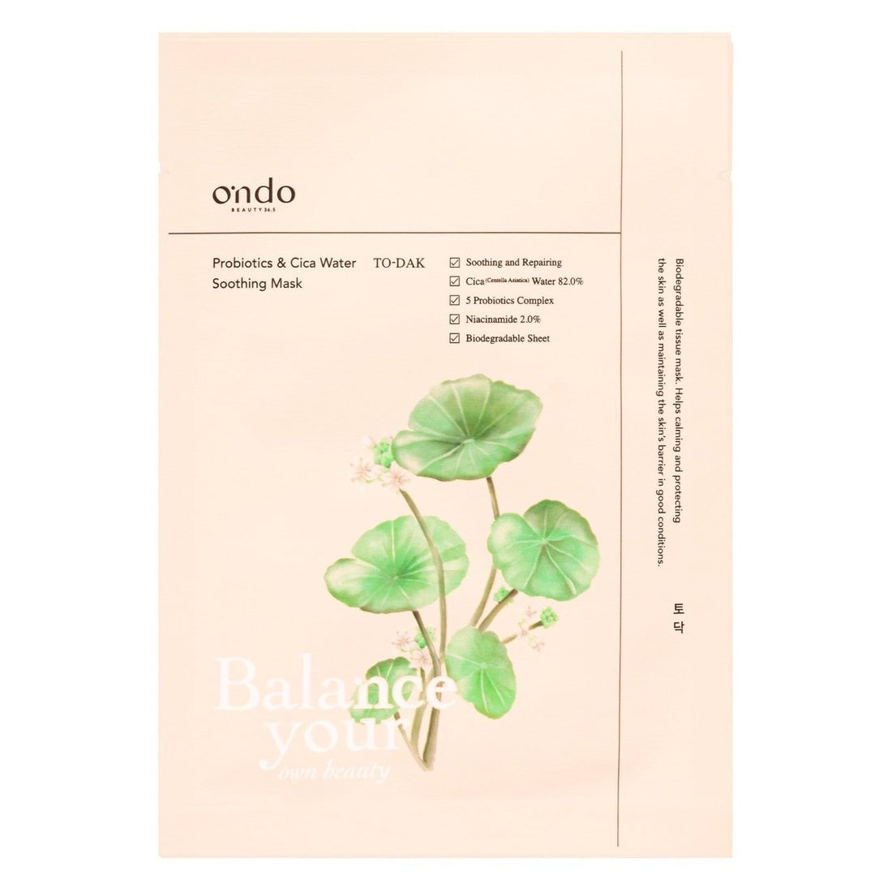
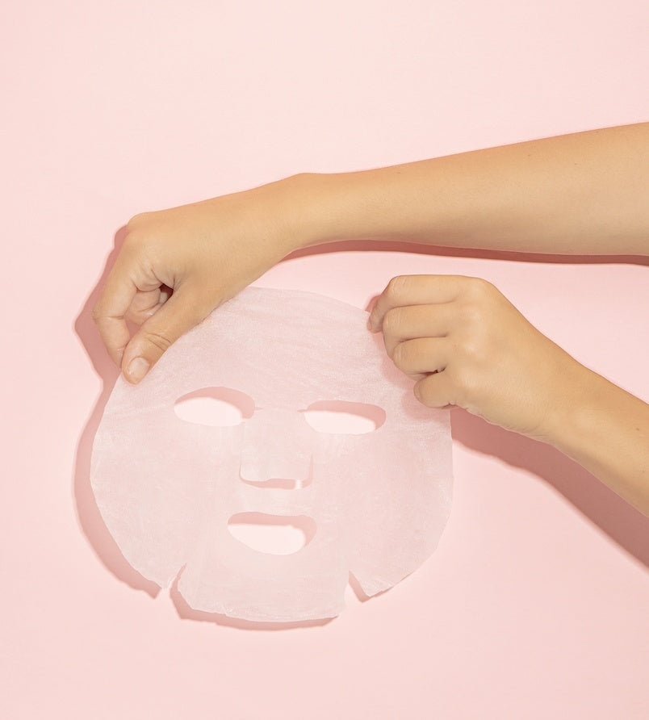

<div> <table style="border-collapse: collapse; width: 99.9809%;" border="1"><colgroup><col style="width: 49.9522%;"><col style="width: 49.9522%;"></colgroup> <tbody> <tr> <td> <div><span style="font-size: 14pt;"><strong>Ondo Beauty 36.5 Masca de fata cu apa de Cica si probiotice, 25ml</strong></span></div> <div><span style="font-size: 14pt;">Ondo Beauty 36.5 Probiotics &amp; Cica Water Soothing Mask, ilustrează planta Centella Asiatica și evidențiază beneficiile formulei: <span data-math="82.0\%" data-index-in-node="185"><span aria-hidden="true">82.0%</span></span> apă de Cica, un complex de 5 probiotice și <span data-math="2.0\%" data-index-in-node="235"><span aria-hidden="true">2.0%</span></span> niacinamidă, ideale pentru calmarea, repararea și protejarea barierei cutanate.</span></div> </td> <td></td> </tr> <tr> <td></td> <td><span style="font-size: 14pt;">Masca biodegradabila Ondo Beauty 36.5, cu&nbsp; materialul ultra-delicat și &icirc;mbibat generos &icirc;n esență calmantă, conceput pentru a se mula perfect pe conturul feței și a reduce instantaneu iritațiile.</span></td> </tr> </tbody> </table> </div>